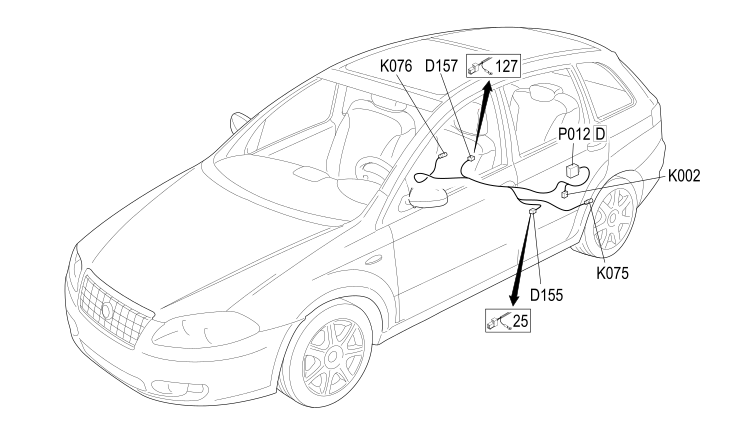

126 REAR SERVICE BRAID
- Path
- Electrical equipment > 2 WIRING > 126 REAR SERVICE BRAID
- Kind
- wiring harness
- Applies to
- all engines; all production periods
- Interactive page
- https://sloeber94.github.io/elrnDB-fCrm/en/#/194001858
Applies to: all engines; all production periods

Topics that link to this page (7)
- D155 FRONT/REAR SERVICE CABLES COUPLING (REAR SERVICE BRAID)
- D155 FRONT/REAR SERVICE CABLES COUPLING (REAR SERVICE BRAID)
- D157 TYRE PRESSURE CONTROL SENSOR COUPLING (REAR SERVICE BRAID)
- K002 HEADLAMP ALIGNMENT CORRECTOR REAR POTENTIOMETER (CAF) (REAR SERVICE BRAID)
- K075 LEFT REAR WHEEL SENSOR FOR ABS (REAR SERVICE BRAID)
- K076 RIGHT REAR WHEEL SENSOR FOR ABS (REAR SERVICE BRAID)
- P012D TYRE PRESSURE CONTROL UNIT ANTENNA (REAR SERVICE BRAID)